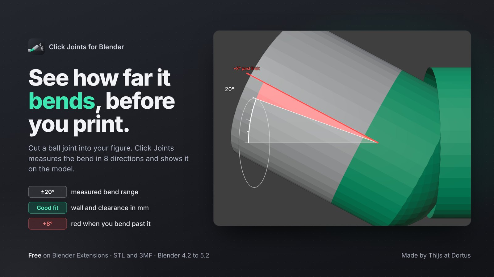
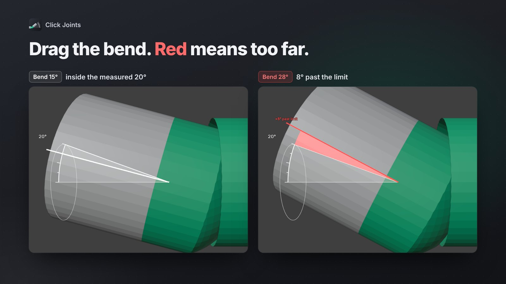
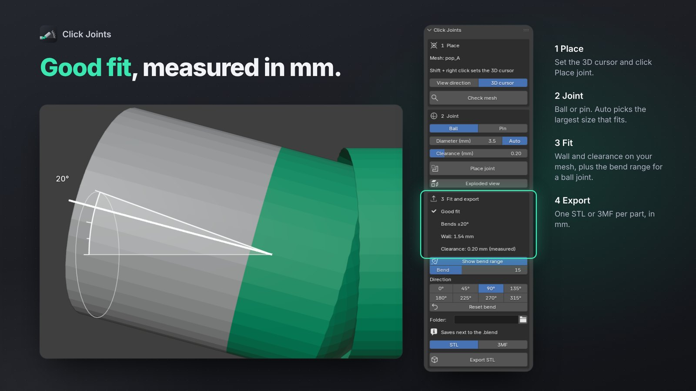

Click Joints · free Blender add-on for 3D printing
See how far it bends, before you print.
Cut a ball or pin joint into your figure, sized with the clearance your printer needs, in millimetres. For a ball joint, Click Joints measures how far it bends before the parts collide, in 8 directions, and shows that range on the model. Made for people who print poseable figures, dolls and props from a Blender model.
Version 0.1.0, free. On its way to Blender Extensions.
Drag the bend. Red means too far.
Auto picks the widest bend with a good fit, and the panel shows the measured angle, for example Bends ±20°. Tilt the part past that limit and the spot where it hits turns red.

Good fit, measured in mm.
A ring on the cut shows the fit: green is a good fit, yellow is tight, red is too thin or breaks through the surface. The panel tells you why, with the wall and the clearance in mm.

What you get, free
- Ball and socket, or pin and hole. Set the 3D cursor where the joint goes, click Place joint, and the mesh is cut into two watertight parts.
- Clearance in mm. Set the gap between the parts (0.1 to 0.3 mm is typical). Auto picks the largest ball with a good fit, or tells you when none fits well.
- Fit colour on the cut. Green, yellow or red, with the reason in the panel, for example Tight: wall 0.89 mm (aim for 1.5 mm or more).
- Bend range in degrees. The measured bend of every ball joint, for example ±20°, with the spot where it hits in red when you tilt past it.
- STL and 3MF. One file per part, always in millimetres. An exploded view shows the ball and socket apart; the export stays in place.
- Make watertight. For open or messy meshes, on a copy. Your original stays untouched.
- Honest limits. A spot too thin for a ball joint, or too close to another joint, is refused with a clear message instead of a broken part.
Install
In Blender 4.2 or newer: open Edit, Preferences, Get Extensions, search for Click Joints and press Install. The panel appears in the 3D viewport sidebar (press N), tab Click Joints.
- Price
- Free
- Works on
- Blender 4.2 or newer. Tested on 4.2 LTS and 5.2 LTS
- Account
- None needed
- License
- GPL 3.0 or later, source on GitHub
Privacy
Click Joints works offline. It makes no network connections, has no telemetry and needs no account. It writes files only when you press Export, as STL or 3MF, in the folder you choose or next to your .blend file. Make watertight works on a copy, so your original mesh is kept as it was. Nothing is sent to Dortus.
Support
Found a bug? Open an issue on GitHub, so others can see it too. A question or an idea? Write to thijs@dortus.com.
Made by Thijs at Dortus.